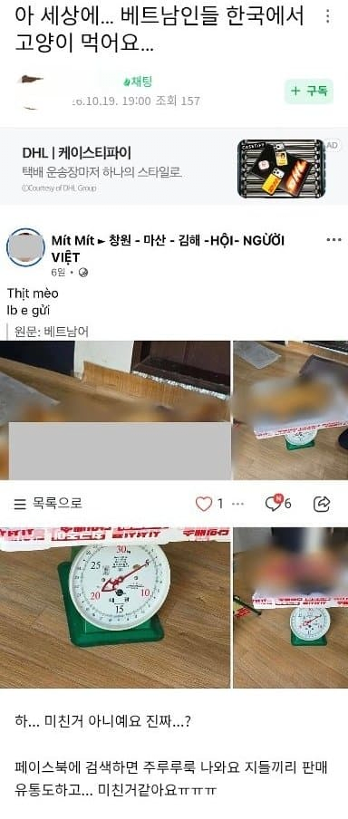

그 많은 고양이 고기가 어디서 날까? ㄷㄷㄷ

그 많은 고양이 고기가 어디서 날까? ㄷㄷㄷ
베트남도 순기능이 있네
많이 먹어라
맛은 길쭉하고 안정적이야
널린게 고기네
응원합니다
존나 맛없을거같은데 걍 아무거나 줏어먹고 위생도 좆도없어서 냄새도 개많이날테고
고수 고추 향신료 이빠이 넣는게 쟤들 풍습이니 잘 먹을듯 개미도 먹잔아 ㅋㅋ
응우옌아 까마귀고기는 안먹니?
착한소비 나이스
먹어서 최종 해결해주면 좋지 뭐.
쌀국수같은 하얀 이빨의 비결이 여기있었네
이게 자연의 섭리인가 ㄷㄷ
어둠의 고양이 개체수 조절단체인가?
중국은 여름매미 잡아먹고, 베트남은 떼껄룩을 잡아먹는구나!
먹든가 말든가 ㅋㅋ
집고양이 잡아가는것만 아니면 노관심이고
유튜브에 아직도 고양이 물에 넣어서 도살하는 영상도 있더라;;
이건 고마운데
먹어서 응원한다
고맙다
20년전만 해도 장터에서 토끼랑 고양이랑 같이 잡았음
천천히 없어지다가 개도축장도 없어짐
당시에도 수요가 있던거 아ㅓ날꺼>